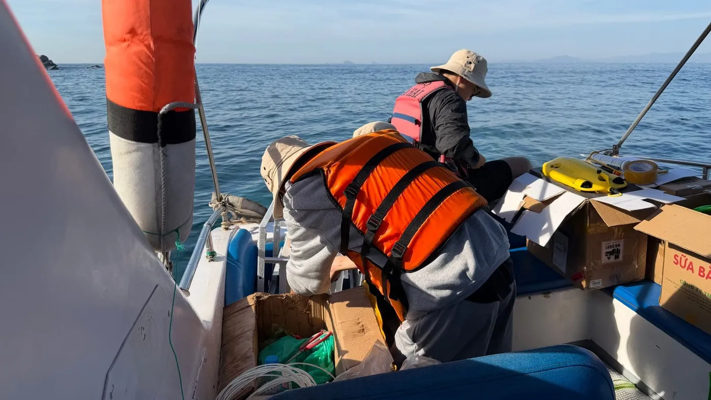
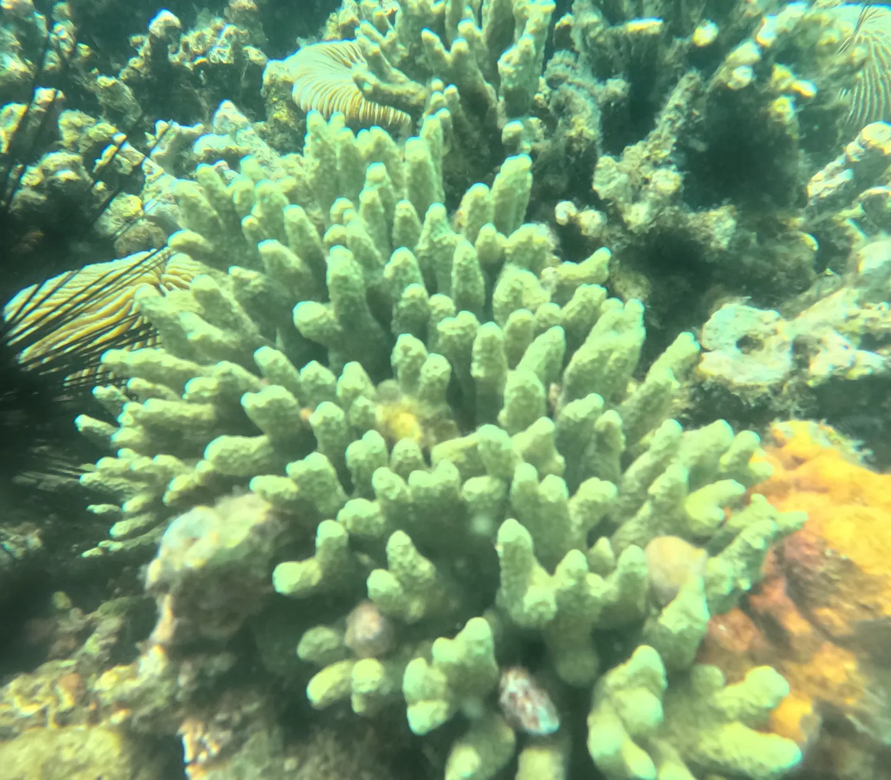
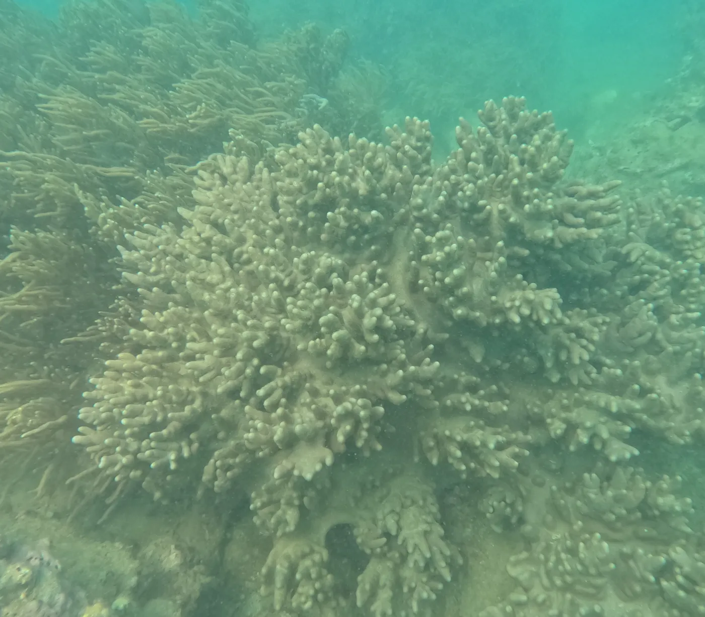

Aaron
AaronGiám sát bảo tồn rạn san hô vịnh Nha Trang
Trạm quan trắc trên rạn và dữ liệu hình ảnh dưới nước cho vịnh Nha Trang
GREEN-X, VinUniversity · Ban Quản lý Vịnh Nha Trang · Trường Đại học Nha Trang

Dự án của GREEN-X, VinUniversity cùng Ban Quản lý Vịnh Nha Trang và Trường Đại học Nha Trang, theo dõi sức khoẻ rạn san hô vịnh Nha Trang theo hai mảng: một trạm quan trắc chất lượng nước đặt ngay trên rạn, và dữ liệu ảnh, video dưới nước về quần xã san hô. Tôi tham gia cả hai mảng.
01Bối cảnh và mục tiêu
Vịnh Nha Trang là một trong những khu bảo tồn biển có đa dạng sinh học cao của Việt Nam, nhưng rạn san hô ở đây chịu sức ép từ nhiệt độ nước tăng, nước thải ven bờ và biến động độ mặn. Cách đánh giá quen thuộc là lặn khảo sát định kỳ; giữa hai lần lặn, những biến động ngắn như oxy hoà tan sụt giảm trong đêm, vốn có thể dẫn tới tẩy trắng, dễ bị bỏ lỡ.
Dự án hướng tới theo dõi rạn liên tục, theo hai mảng bổ sung cho nhau. Mảng thứ nhất là một trạm quan trắc tự động đặt ngay trên rạn, ghi chất lượng nước cả ngày lẫn đêm (mục 03). Mảng thứ hai là dữ liệu ảnh và video dưới nước, ghi lại chính quần xã san hô để đánh giá mức tẩy trắng và xây dựng dữ liệu cho các mô hình đánh giá tự động (mục 04). Tôi tham gia cả hai mảng (mục 05 và 06).
02Người và đơn vị thực hiện
Dự án bắt đầu từ tháng 2.2025, do TS. Phạm Huy Hiệu, TS. Phùng Mạnh Dương và TS. Đinh Văn Dũng dẫn dắt. Anh Phạm Minh Hoàng phụ trách kỹ thuật; tôi và Nguyễn Xuân Quyền là trợ lý nghiên cứu. Các đơn vị cùng thực hiện:
- GREEN-X (Trung tâm Chuyển đổi xanh thông minh), VinUniversity: đơn vị chủ trì; nhóm IoT của GREEN-X chế tạo các thế hệ trạm đầu tiên.
- Ban Quản lý Vịnh Nha Trang: thống nhất vị trí đặt trạm trong khu bảo tồn và luồng di chuyển, để dữ liệu phục vụ công tác bảo tồn.
- Trường Đại học Nha Trang: các nhà sinh thái biển và hải dương học tư vấn ngưỡng chất lượng nước và các vùng rạn quan trọng.
- Sở Tài chính tỉnh Khánh Hoà: làm việc về phương án triển khai và cơ chế phối hợp.
03Trạm quan trắc trên rạn
Trạm đo chất lượng nước ở cùng tầng nước với rạn, trong vùng bảo vệ nghiêm ngặt do Ban Quản lý Vịnh quản lý, và gửi số liệu liên tục qua mạng di động về máy chủ, để nhà khoa học và Ban Quản lý Vịnh theo dõi rạn cả ngày lẫn đêm và nhận cảnh báo khi một thông số vượt ngưỡng.
Trạm đã qua ba thế hệ. Các thế hệ đầu do nhóm IoT của GREEN-X chế tạo: hộp điện tử và tấm pin mặt trời đặt trên đỉnh một phao tiêu, cao hơn vùng sóng đánh, còn cụm cảm biến được thợ lặn neo xuống độ sâu của rạn (Hình 1; ảnh bìa là thế hệ thứ hai). Tháng 10.2026, trạm được thay bằng thế hệ mới dạng bè nổi nhỏ mang tấm pin và tủ thiết bị; nhóm chở bè ra biển, lắp tủ thiết bị ngay trên tàu rồi thả trạm xuống vùng rạn (Hình 2, Hình 3). Bộ thông số cũng được điều chỉnh: bỏ độ mặn và độ đục, thêm độ bão hoà oxy (PDO); hiện trạm đo nhiệt độ, pH, oxy hoà tan (DO) và PDO.



04Dữ liệu hình ảnh dưới nước
Trạm cho biết nước quanh rạn ra sao, nhưng không cho biết san hô đang thế nào. Mảng thứ hai lấp khoảng trống đó: video và ảnh dưới nước ghi lại các tập đoàn san hô, kèm ảnh flycam vùng rạn nông (Hình 4). Từ đây có thể đánh giá mức tẩy trắng, tảo phủ, và xây dựng bộ dữ liệu cho các mô hình đánh giá san hô tự động.
Từ video khảo sát, nhóm đang xây dựng NTCoral, bộ dữ liệu ảnh rạn san hô Việt Nam có nhãn do chuyên gia kiểm chứng. Mô hình phân vùng san hô sống, chết và tẩy trắng trong ứng dụng do các thành viên khác trong nhóm phát triển.

05Phần tôi làm ở trạm quan trắc
Tôi dựng mạng riêng ảo (VPN) cho trạm và duy trì kết nối để máy của nhóm truy cập được trạm từ xa. Tôi thiết kế ứng dụng giám sát trên ThingsBoard cho trạm (Hình 6): màn tổng quan gồm bản đồ vị trí trạm, số đo mới nhất với chỉ số an toàn nước và lịch sử cảnh báo; màn cài đặt cho phép đặt ngưỡng riêng cho từng thông số, kể cả PDO.
Trong các chuyến công tác tháng 4, 6, 8 và 10.2026, tôi cùng đội kỹ thuật ra phao kiểm tra và sửa trạm (Hình 5). Vì hộp điện tử nằm trên đỉnh phao giữa biển, hơi muối là mối đe doạ thường trực: có lần muối lọt vào hộp và trạm ngừng chạy lúc 3 giờ sáng; thiết bị thế hệ mới chạy được hai đến ba tuần thì số đo bắt đầu trôi. Mỗi sự cố như vậy là một lý do để thiết kế lại trạm.


06Phần tôi làm ở mảng dữ liệu
Trong các đợt khảo sát, tôi là người cầm máy quay. Hai đợt đầu (4 và 6.2026) dùng thiết bị lặn điều khiển từ xa Chasing Gladius Mini S, sau đó gắn thêm GoPro Hero 4, nhưng hình ảnh chưa đủ rõ để làm dữ liệu. Từ tháng 8.2026, nhóm chuyển sang GoPro Hero 13 và hình ảnh đạt chất lượng (Hình 7); đợt đầu tháng 10.2026 quay tại các rạn quanh Hòn Một, Hòn Chồng, Hòn Tre và Hòn Mun.
Video được đưa vào kho dữ liệu khảo sát trong ứng dụng, xếp theo ngày quay (Hình 8). Mỗi video có thể phát song song với kết quả phân vùng để đối chiếu (Hình 9), và là nguồn ảnh cho bộ dữ liệu NTCoral.





07Kết quả đến nay
- Trạm quan trắc gửi số liệu liên tục về ứng dụng; người dùng xem diễn biến từng thông số và nhận cảnh báo khi vượt ngưỡng.
- Ba thế hệ trạm, mỗi lần thay đổi dựa trên sự cố thực tế ngoài biển như muối lọt vào hộp điện tử hay số đo trôi.
- Kho video khảo sát dưới nước từ nhiều đợt quay trong năm 2026, phát song song với kết quả phân vùng san hô.
- Khoảng 2.000 ảnh đã được chọn từ video khảo sát cho bộ dữ liệu NTCoral, đang được gán nhãn cùng chuyên gia sinh học biển.
08Truyền thông
GREEN-X đã đưa tin về các phiên làm việc của dự án: với Ban Quản lý Vịnh Nha Trang, 22.08.2025, với các sở, ngành tỉnh Khánh Hoà, 16.03.2026 và với Sở Văn hoá, Thể thao và Du lịch Khánh Hoà về du lịch xanh, 18.03.2026. Trang dự án do anh Phạm Minh Hoàng viết có thêm ảnh các buổi làm việc và video triển khai: xem tại đây.